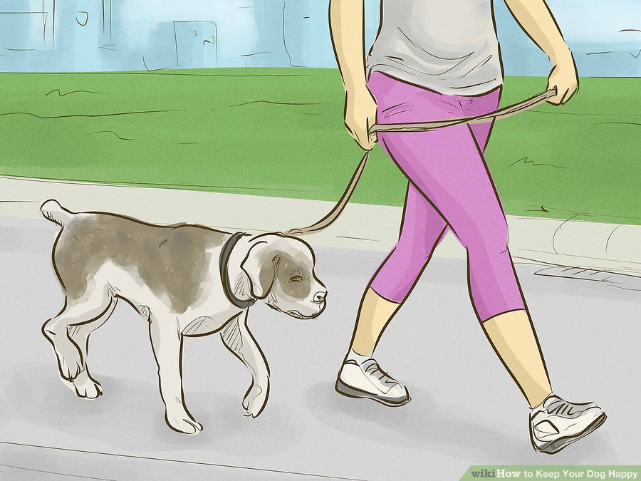

How to Keep Your Dog Happy
Method 1: Enriching Your dog's mind
1. Give your pup a job for when you're gone and they are left alone.
Dogs are bred for a specific purpose, whether it be herding or hunting, and can misbehave when these natural instincts are suppressed.
- Create an obstacle course in which your dog follows a scent to his favorite treats.
- Provide him with food puzzle toys, like Kongs, to stimulate his mind.
- Leave him with plenty of chew toys. These will not only strengthen his jaw and teeth, but also keep him from chewing up your shoes instead.
- Hire a dog walker or someone to play with your pet while you’re away.
2. Socialize your furry friend.
Keeping him isolated or at home all day can be detrimental to his emotional well-being and create fear when he finally does come in contact with other people or dogs. But always remember to take your pup’s personality into account so you know what his limits for socializing are.
- Take your dog on a walk, to the dog park, or set up play dates with other humans and their dogs.
- Have a friend, whom your dog knows and trusts, look after your pet once a week to get him used to other people.
- If your dog has a cautious demeanor, introduce him to one dog at a time, and only if the other dog is calm and won't frighten your pup.
3. Train your dog.
This will not only increase his mental stimulation, but also strengthen the bond between you and your pooch by making your expectations for him clear. If you aren’t sure what training would benefit your dog most, contact a Certified Pet Dog Trainer.
4. Establish yourself as pack leader and never waiver.
It’s important to show your dog love and affection, but he is a tribal animal above all else. Your pooch will become confused without structure and consistency in his life, so be sure you stick to your role.
- Playtime is only for when he is calm and receptive.
- Reward your pup with special treats when he has followed your directions.
- During walks your dog should be next to or behind you.
5. Remain calm and assertive around your dog.
Never behave uneasy or anxious. Because you are the pack leader, these feelings are sure to rub off on your pet.
- Nervous animals are more likely to be aggressive.
6. Maintain your dog’s confidence.
Believe it or not, your pup does have self-esteem, and there are things that you, as his owner, can do to keep it up. Praise your dog when he has mastered a new trick, along with other accomplishments.
- Remember that your tone of voice is the key to communication with your pet; praise for him should sound different than a command.
Method 2: Mainting Your Dog's Physical Health
1. Keep your pup active.
Especially if he is alone all day, a dog needs exercise just like people do. Take your dog on a walk around the block or play a fun, interactive game with him.
- Hide and seek will stimulate your pet’s mind and body.
- If you have a high-energy breed, your dog could benefit from an agility class, which may be offered through your local shelter.
- A puppy is especially precocious, so active games like tug-of-war and fetch will burn some energy and help to socialize him.
- For an older dog with stiff joints, water activities are a safe, low impact source of exercise.
- If you have a small dog, consider finding a dog park that has specified areas where your pet can socialize with pup's his own size and temperament so you don't have to be skeptical of his safety.
2. Feed your dog a nourishing, balanced diet.
An animal is happiest when he can exercise, and to do so, he must eat healthful food. What you feed your pooch depends on his age, energy level and potential allergies. Organic, grain free kibble is always best if you are going to go the commercial route. However, some veterinarians also swear by feeding dogs “people food”. Dog-approved people foods include:
- Raw, unsalted peanut butter
- Baby carrots
- Pumpkin
- Green beans
- Sliced apples
3. Schedule regular veterinary appointments for your pet.
The vet will provide an overall health screening, as well as any vaccinations your dog might need. It's best for puppies and older dogs to visit every six months, while once a year is adequate for adult dogs under the age of ten.
- This visit can also help you determine methods for keeping your dog’s ears and teeth clean, along with any other hygiene concerns.

4. Give your pup regular massages.
This will bring down his stress levels and soothe any joint pain he may be experiencing.
- A slow rub down that reaches the muscle, fat and bones can work wonders to calm a nervous dog.
- Daily massages can prolong the length and quality of your canine’s life.
- Rubbing your dog’s joints can prepare him for physical activity and help him to unwind directly after.
- Great Danes and Mastiffs are especially prone to arthritis, so aside from a daily massage, nutritional supplements can be considered to keep these breeds healthy and pain free.